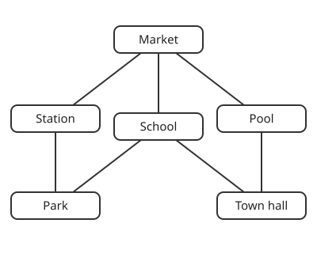
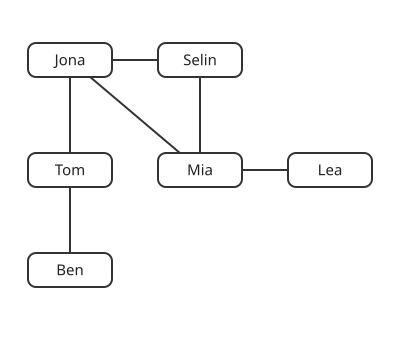
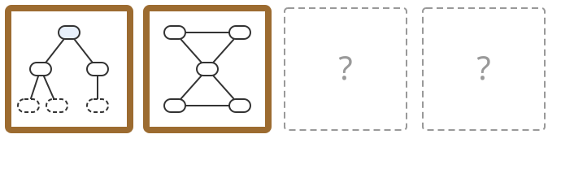

From tree to graph
Learn with an AI tutor
An AI tutor explains this page to you and helps you with the exercises. Choose your assistant:
Open with Claude Open with ChatGPT Open with Mistral Vibe
You use your own account with the provider. The assistant is not offered by lernapps.net: lernapps only provides the content and the exercises. The choice holds for all pages, on this device only.
Is the bus network a tree?
Class 7b chat
Selin: Swimming pool on Saturday? Let's meet at the station.
Jona: Here is the bus map. Each line is a direct ride with no stop in between.
Mia: Looks like our room tree from Seeberg!

© CC-BY-4.0Jona's bus map. Each box is a stop, each line is a direct ride.
Exercise
Solution
Right answer: The statement is false.
Station, Market, School, Park and back to Station: this ride goes round in a loop. That is not possible in a tree, because there every node hangs from exactly one node above it.
Nodes, edges, paths
On this page you will learn to show networks like the bus network as a graph. You already know the tree: it has nodes and edges, and exactly one path leads from the root to each leaf. In the bus network there is no root, and a path may lead back.
- graph
A graph is made of nodes and edges. An edge connects two nodes. Any node may be connected to any other node.
- path
A path leads along edges from one node to another. The length of a path is the number of its edges.
Exercise
Solution
Right answer: 2
Station – Market – Pool is 2 edges. Other paths, for example via Park, School and Town hall, are 4 edges long. In a graph there are often several paths to the same node.
- cycle
A cycle is a path that leads back to the node it started from without using any edge twice.
Remember
A tree is a graph with no cycle. That is why in a tree exactly one path leads to each node, and in a graph there are often several. A graph in computer science is not a chart with axes, but a network.
A friendship network made of string
Lay out a network in class, without a computer. You need cards, a pen and a ball of wool.
- Everyone writes their own name on a card and holds it in front of them. The card is a node.
- If you are friends with someone, stretch a piece of string to that person. Each piece of string is an edge.
- Look for a cycle: follow the strings until you get back to the first card.

© CC-BY-4.0This is what part of your network might look like. Jona, Selin and Mia form a cycle.
The friendship network on the computer
Now you build a friendship network on the computer. Tap one name and then a second one: this puts an edge between the two. If you tap the same two names again, the edge disappears. Below the picture you can see all your edges, each with a button to remove it.
Exercise
Task no. 1
Task no. 1
Add an edge for each friendship:
- Jona and Mia are friends.
- Jona and Tom are friends.
- Jona and Lea are friends.
- Selin and Tom are friends.
- Mia and Tom are friends.
- Mia and Lea are friends.
Solution
Jona – Mia, Jona – Tom, Jona – Lea, Selin – Tom, Mia – Tom, Mia – Lea
Solution
Jona – Mia, Jona – Tom, Jona – Lea, Selin – Tom, Mia – Tom, Mia – Lea
Jona – Selin, Jona – Mia, Selin – Mia, Tom – Lea
Jona – Mia, Jona – Tom, Selin – Tom, Selin – Lea, Tom – Lea
Jona – Lea, Selin – Mia, Selin – Tom, Selin – Lea, Mia – Tom, Mia – Lea
Jona – Lea, Selin – Tom, Mia – Tom, Mia – Lea
Jona – Tom, Selin – Mia, Selin – Lea, Mia – Tom
Jona – Mia, Jona – Tom, Jona – Lea, Selin – Tom, Selin – Lea, Mia – Lea
Jona – Selin, Selin – Lea, Mia – Lea, Tom – Lea
Jona – Selin, Jona – Tom, Jona – Lea, Selin – Lea, Mia – Lea
Jona – Selin, Jona – Mia, Jona – Tom, Jona – Lea, Selin – Mia, Selin – Lea
Jona – Selin, Jona – Mia, Jona – Tom, Jona – Lea, Selin – Lea
Jona – Mia, Jona – Lea, Selin – Tom, Mia – Tom, Mia – Lea, Tom – Lea
Jona – Mia, Jona – Tom, Selin – Mia, Selin – Lea, Mia – Lea, Tom – Lea
Jona – Selin, Jona – Mia, Selin – Tom, Selin – Lea, Mia – Tom, Mia – Lea
Jona – Selin, Selin – Mia, Selin – Tom, Selin – Lea, Tom – Lea
Jona – Selin, Jona – Lea, Selin – Mia, Selin – Tom, Mia – Tom, Mia – Lea
Jona – Selin, Jona – Tom, Jona – Lea, Selin – Tom, Mia – Tom, Tom – Lea
Jona – Selin, Jona – Tom, Selin – Lea, Mia – Lea, Tom – Lea
Jona – Mia, Selin – Mia, Selin – Lea, Mia – Tom, Mia – Lea, Tom – Lea
Jona – Selin, Jona – Mia, Selin – Tom, Selin – Lea, Mia – Lea, Tom – Lea
Jona – Selin, Jona – Mia, Jona – Lea, Selin – Tom, Selin – Lea, Mia – Lea
Jona – Tom, Selin – Mia, Selin – Tom, Selin – Lea, Mia – Tom
Jona – Tom, Jona – Lea, Selin – Mia, Mia – Lea, Tom – Lea
Jona – Mia, Selin – Mia, Selin – Tom, Selin – Lea, Mia – Tom, Tom – Lea
Jona – Tom, Jona – Lea, Selin – Lea, Mia – Lea
Jona – Mia, Jona – Lea, Selin – Mia, Tom – Lea
Jona – Tom, Jona – Lea, Selin – Tom, Selin – Lea, Mia – Tom
Jona – Selin, Jona – Tom, Jona – Lea, Mia – Lea, Tom – Lea
Jona – Selin, Jona – Lea, Selin – Mia, Selin – Tom
Jona – Tom, Selin – Mia, Selin – Tom, Selin – Lea, Tom – Lea
Jona – Mia, Jona – Lea, Selin – Mia, Mia – Lea, Tom – Lea
Jona – Selin, Jona – Mia, Selin – Mia, Selin – Tom, Mia – Lea, Tom – Lea
Jona – Selin, Jona – Tom, Selin – Mia, Mia – Lea
Jona – Mia, Selin – Mia, Selin – Tom, Tom – Lea
Jona – Mia, Jona – Tom, Selin – Tom, Mia – Lea, Tom – Lea
Jona – Selin, Jona – Lea, Selin – Lea, Mia – Tom
Jona – Tom, Jona – Lea, Selin – Mia, Selin – Lea, Mia – Tom
Jona – Mia, Jona – Tom, Jona – Lea, Selin – Tom, Mia – Lea, Tom – Lea
Jona – Selin, Jona – Mia, Jona – Tom, Selin – Lea, Mia – Tom, Tom – Lea
Jona – Selin, Jona – Tom, Jona – Lea, Selin – Tom, Mia – Tom
Jona – Mia, Selin – Tom, Mia – Tom, Mia – Lea
Jona – Tom, Jona – Lea, Selin – Mia, Selin – Lea, Mia – Tom, Tom – Lea
Jona – Mia, Jona – Lea, Selin – Mia, Selin – Tom, Mia – Tom, Tom – Lea
Jona – Mia, Jona – Tom, Selin – Mia, Selin – Lea, Mia – Tom, Tom – Lea
Jona – Mia, Jona – Tom, Selin – Mia, Selin – Tom, Mia – Lea
Jona – Mia, Jona – Lea, Selin – Tom, Selin – Lea, Mia – Tom, Tom – Lea
Jona – Tom, Selin – Mia, Mia – Tom, Mia – Lea
Jona – Selin, Jona – Mia, Selin – Tom, Mia – Lea
Jona – Tom, Selin – Mia, Selin – Tom, Selin – Lea, Mia – Tom, Tom – Lea
Jona – Mia, Selin – Mia, Selin – Lea, Mia – Lea, Tom – Lea
Jona – Mia, Jona – Tom, Jona – Lea, Selin – Mia, Selin – Tom, Mia – Lea
Jona – Selin, Selin – Mia, Selin – Lea, Mia – Tom, Mia – Lea
Jona – Mia, Selin – Mia, Selin – Lea, Tom – Lea
Jona – Selin, Jona – Lea, Mia – Tom, Mia – Lea, Tom – Lea
Jona – Selin, Jona – Lea, Selin – Mia, Selin – Lea, Mia – Tom, Mia – Lea
Jona – Mia, Jona – Tom, Jona – Lea, Selin – Lea, Tom – Lea
Jona – Selin, Selin – Tom, Mia – Tom, Mia – Lea, Tom – Lea
Jona – Selin, Jona – Tom, Selin – Tom, Selin – Lea, Mia – Tom, Tom – Lea
Jona – Mia, Jona – Tom, Jona – Lea, Selin – Mia, Mia – Lea
Jona – Lea, Selin – Mia, Selin – Tom, Selin – Lea
Jona – Mia, Jona – Lea, Selin – Tom, Selin – Lea
Jona – Selin, Jona – Mia, Selin – Mia, Selin – Lea, Tom – Lea
Jona – Selin, Selin – Lea, Mia – Tom, Mia – Lea
Jona – Tom, Selin – Lea, Mia – Tom, Mia – Lea
Jona – Selin, Selin – Mia, Selin – Tom, Mia – Tom, Mia – Lea
Jona – Mia, Jona – Tom, Selin – Tom, Selin – Lea, Mia – Lea, Tom – Lea
Jona – Selin, Jona – Mia, Jona – Lea, Selin – Mia, Mia – Lea, Tom – Lea
Practice
Exercise
Solution
Right answer: 7
Three edges lead away from the market, four more connect Station, Park, School, Town hall and Pool: 7 in total. A tree with 6 nodes would only have 5 edges.
Exercise
Solution
Right answer: The statement is true.
A tree is made of nodes and edges, so it is a graph. It is a special graph, because it has no cycle.
Exercise
Solution
C right answer
In C, a path leads round the square back to the start. That is a cycle.
B
B looks different from the usual tree picture, but it has no cycle. A chain is a tree without branches.
A
A branches out like the room tree and has no cycle.
A tree is a graph with no cycle. How the network is drawn does not matter. Only C has a cycle.
The gallery grows

© CC-BY-4.0The gallery of data structures. The graph in the second frame is new.
| Structure | How you find an element |
|---|---|
| tree | From the root downwards: there is exactly one path. |
| graph | Follow the edges from a node: there are often several paths. Choose a short one. |
Next, Jona, Selin and Mia link their pages. Here every edge points in one direction.
Found a mistake or have an idea for this app?